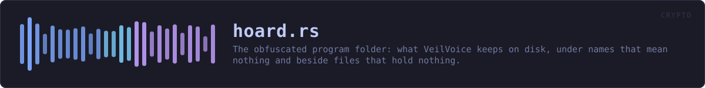

crates/veilvoice-crypto/src/hoard.rs
veilvoice-crypto · 1109 lines · read the source here · or on GitHub
The obfuscated program folder: what VeilVoice keeps on disk, under names that mean nothing and beside files that hold nothing.
What this buys, stated before anything else
Somebody who opens VeilVoice's folder without the app-lock passphrase sees a few dozen files with names like k7Qa1mXv9pLd0RtYbN3zHwFe, all of them full of bytes that look random, all of them one of a handful of sizes. They cannot tell which files hold settings, which hold measurements, which hold anything at all, and which are junk this module wrote precisely so that the question has no answer from outside.
That is the whole claim. It is worth having and it is smaller than it sounds, so here is the other half, in the same breath:
- It does not hide that you use VeilVoice. The folder is called
veilvoice, the lock file sits in it under its own name, and the application is on disk. Anybody looking knows. - It does not hide how much you have. File count and the bucket sizes are visible. Decoys blur that number; they do not erase it.
- It is not protection from someone who has your passphrase, and it is not protection while the application is open and unlocked. At that moment everything here is readable, because it has to be.
- It does not stop deletion. Anybody who can read this folder can empty it. What they cannot do is empty it quietly: see the roster below.
- Somebody who knows VeilVoice knows what these files are. The format is public, this file is the specification, and a forensic examiner who recognises it will recognise it here. Obfuscation is not steganography and this module does not pretend otherwise.
What it does buy is the thing the app lock could not previously offer: a reason to exist beyond a password prompt. Before this, the lock verified a passphrase and guarded a window; the files behind it sat in the clear under their own names, and deleting the lock file removed the whole obstacle. Now the passphrase derives the key that names and opens these records, so deleting the lock does not reveal them -- it destroys the only copy of the salt they were derived through, and takes them with it. That is a real change in what the lock is worth, and also a real way to lose your data, which is why crate::lock keeps a second copy and the interface says so.
How a record is found
Every record has a logical name that only the program uses: settings, measured, tour. The file it lives in is named
base64url(HMAC-SHA256(store_key, "veilvoice/hoard/name" || logical)[..18])which is twenty-four characters of base64 with no padding and no extension. Eighteen bytes rather than a round sixteen so the encoding comes out exact: nothing to pad, which is one less thing to tell a name apart from a decoy.
The derivation is deterministic, so the program does not search: it computes the name it wants and opens that file. This is what makes the selection cryptographic rather than a lookup table. There is no index mapping settings to a filename, because an index is exactly the thing an attacker would want. Without the key there is no way to run the derivation, and with the key there is no need to store it.
What is inside one
["V" 2][24-byte nonce][ChaCha20-Poly1305 over: [4-byte length][data][junk]]The first two bytes say which format the rest is in. F-337. Records used to be put through one of thirty-one reversible encodings before the cipher and another after it, and their names through one more. None of it added strength: the AEAD already makes a record indistinguishable from random, and the encodings are published here, so anybody who can read the source can undo them. What they did cost was compute and room, since every record was padded for the widest encoding at eight times its length. New records are written without them. crate::weave is kept only to open a record an older VeilVoice wrote, and that record is rewritten in the current format, under its current name, the first time it is read.
The junk pads every record up to one of a few fixed sizes, so a file's length says which bucket it fell in and nothing finer. The additional data for the AEAD is the filename itself, which binds a record to its name: two real files cannot be swapped without the swap being detected, because each one authenticates the name it is supposed to be under.
The per-record key is a separate HKDF branch, so one record's key says nothing about another's.
The roster, and the one deletion claim this can honestly make
A record can be modified, and the AEAD catches that: any edit fails to authenticate and Hoard::audit reports the record as tampered with.
Deletion is harder, because a file that is not there looks exactly like a file that was never written. So the hoard keeps one more record, the roster, listing the logical names that should exist. It is stored like any other record, under a derived name, encrypted and padded, so it is not identifiable from outside either.
That gives a real answer for deletion of some of the folder: a record in the roster whose file is gone was deleted, and audit says so. It gives no answer for deletion of all of it, including the roster, and nothing stored in this folder ever could -- at that point the only evidence is that the folder is empty, which you can see for yourself. The roster is missing while the lock exists is itself reported, which is the closest honest approximation, and it is stated as what it is rather than dressed up.
In plain words
VeilVoice's own files are encrypted and given meaningless names, and a pile of decoy files sits among them so nobody can tell which is which. Only the program, once you have unlocked it, can work out which file is which.
Anybody looking at the folder still knows you use VeilVoice, and can still delete the lot. What they cannot do is read any of it, work out how much of it there is, or change any of it without VeilVoice telling you next time you unlock.
WHAT THIS FILE CONTAINS
1109 lines defining 25 functions (11 public), 3 types and 9 constants. Everything below is read out of the source, so it cannot disagree with the code.
The types it owns.
struct StoreKeyline 170 · The key that names and opens everything in the hoard.struct Auditline 226 · What an audit found.struct Hoardline 248 · An obfuscated store rooted at a directory.
What happens when it runs. These are the ways in: public, and nothing else in this file calls them, so they are what an outside caller reaches first.
StoreKey::from_secretline 174 · Wrap raw key material.Audit::is_cleanline 242 · Whether anything was found that a user should be told about.Hoard::openline 255 · Open the hoard in dir.Hoard::path_forline 286 · The full path of a logical record.
reachesname_for,base64urlHoard::writeline 294 · Encrypt and store data under logical, padded and named so that neither its content nor its purpose is visible from outside.
reachesroster,save_roster,write_raw,fetch,fill_random,legacy_name_for,name_for,remove_if_present,open_bytes,read_if_present,base64url,open_legacyHoard::readline 388 · Read a record back, or None if it was never written.
reachesfetch,write_raw,legacy_name_for,name_for,open_bytes,read_if_present,fill_random,remove_if_present,base64url,open_legacy,unsealHoard::removeline 466 · Remove a record, under either name it may have, and drop it from the roster.
reacheslegacy_name_for,name_for,remove_if_present,roster,save_roster,base64url,fetch,write_raw,open_bytes,read_if_present,fill_random,open_legacyHoard::sow_decoysline 520 · Write decoy files: names of the same shape, contents of the same character, holding nothing.
reachesbase64url,fill_randomHoard::auditline 551 · Check every record the roster knows about, and count what else is here.
reachesfetch,is_hoard_shaped,legacy_name_for,name_for,roster,open_bytes,read_if_present,base64url,save_roster,open_legacy,unseal,write_raw
WHAT CALLS WHAT
The functions this file defines, and the calls between them. An edge means the callee's name appears, called, inside the caller's body. This is a syntactic reading, not a type-resolved one. 22 of 25 functions are drawn; the diagram is bounded at 22 so it stays readable.
The same graph as Mermaid source
%%{init: {"theme":"base","themeVariables":{"background":"#1a1b26","primaryColor":"#1f2335","primaryTextColor":"#c0caf5","primaryBorderColor":"#7aa2f7","secondaryColor":"#16161e","tertiaryColor":"#16161e","lineColor":"#737aa2","textColor":"#c0caf5","mainBkg":"#1f2335","nodeBorder":"#7aa2f7","clusterBkg":"#16161e","clusterBorder":"#2f3549","fontFamily":"ui-monospace, SFMono-Regular, Consolas, monospace","fontSize":"14px"}}}%%
flowchart TD
n_from_secret(["StoreKey::from_secret<br/>line 174"])
n_base64url["base64url<br/>line 191"]
n_is_clean(["Audit::is_clean<br/>line 242"])
n_name_for["Hoard::name_for<br/>line 266"]
n_legacy_name_for["Hoard::legacy_name_for<br/>line 278"]
n_path_for(["Hoard::path_for<br/>line 286"])
n_write(["Hoard::write<br/>line 294"])
n_write_raw["Hoard::write_raw<br/>line 310"]
n_fetch["Hoard::fetch<br/>line 362"]
n_read(["Hoard::read<br/>line 388"])
n_open_bytes["Hoard::open_bytes<br/>line 404"]
n_unseal["Hoard::unseal<br/>line 425"]
n_open_legacy["Hoard::open_legacy<br/>line 444"]
n_remove(["Hoard::remove<br/>line 466"])
n_roster["Hoard::roster<br/>line 480"]
n_save_roster["Hoard::save_roster<br/>line 501"]
n_sow_decoys(["Hoard::sow_decoys<br/>line 520"])
n_audit(["Hoard::audit<br/>line 551"])
n_read_if_present["read_if_present<br/>line 585"]
n_remove_if_present["remove_if_present<br/>line 594"]
n_is_hoard_shaped["is_hoard_shaped<br/>line 606"]
n_fill_random["fill_random<br/>line 618"]
n_audit --> n_fetch
n_audit --> n_is_hoard_shaped
n_audit --> n_legacy_name_for
n_audit --> n_name_for
n_audit --> n_roster
n_fetch --> n_legacy_name_for
n_fetch --> n_name_for
n_fetch --> n_open_bytes
n_fetch --> n_read_if_present
n_legacy_name_for --> n_base64url
n_name_for --> n_base64url
n_open_bytes --> n_open_legacy
n_open_bytes --> n_unseal
n_open_legacy --> n_unseal
n_path_for --> n_name_for
n_read --> n_fetch
n_read --> n_write_raw
n_remove --> n_legacy_name_for
n_remove --> n_name_for
n_remove --> n_remove_if_present
n_remove --> n_roster
n_remove --> n_save_roster
n_roster --> n_fetch
n_roster --> n_save_roster
n_save_roster --> n_write_raw
n_sow_decoys --> n_base64url
n_sow_decoys --> n_fill_random
n_write --> n_roster
n_write --> n_save_roster
n_write --> n_write_raw
n_write_raw --> n_fill_random
n_write_raw --> n_legacy_name_for
n_write_raw --> n_name_for
n_write_raw --> n_remove_if_present
click n_from_secret href "https://github.com/tilas01/veilvoice/blob/main/crates/veilvoice-crypto/src/hoard.rs#L174" "open the source"
click n_base64url href "https://github.com/tilas01/veilvoice/blob/main/crates/veilvoice-crypto/src/hoard.rs#L191" "open the source"
click n_is_clean href "https://github.com/tilas01/veilvoice/blob/main/crates/veilvoice-crypto/src/hoard.rs#L242" "open the source"
click n_name_for href "https://github.com/tilas01/veilvoice/blob/main/crates/veilvoice-crypto/src/hoard.rs#L266" "open the source"
click n_legacy_name_for href "https://github.com/tilas01/veilvoice/blob/main/crates/veilvoice-crypto/src/hoard.rs#L278" "open the source"
click n_path_for href "https://github.com/tilas01/veilvoice/blob/main/crates/veilvoice-crypto/src/hoard.rs#L286" "open the source"
click n_write href "https://github.com/tilas01/veilvoice/blob/main/crates/veilvoice-crypto/src/hoard.rs#L294" "open the source"
click n_write_raw href "https://github.com/tilas01/veilvoice/blob/main/crates/veilvoice-crypto/src/hoard.rs#L310" "open the source"
click n_fetch href "https://github.com/tilas01/veilvoice/blob/main/crates/veilvoice-crypto/src/hoard.rs#L362" "open the source"
click n_read href "https://github.com/tilas01/veilvoice/blob/main/crates/veilvoice-crypto/src/hoard.rs#L388" "open the source"
click n_open_bytes href "https://github.com/tilas01/veilvoice/blob/main/crates/veilvoice-crypto/src/hoard.rs#L404" "open the source"
click n_unseal href "https://github.com/tilas01/veilvoice/blob/main/crates/veilvoice-crypto/src/hoard.rs#L425" "open the source"
click n_open_legacy href "https://github.com/tilas01/veilvoice/blob/main/crates/veilvoice-crypto/src/hoard.rs#L444" "open the source"
click n_remove href "https://github.com/tilas01/veilvoice/blob/main/crates/veilvoice-crypto/src/hoard.rs#L466" "open the source"
click n_roster href "https://github.com/tilas01/veilvoice/blob/main/crates/veilvoice-crypto/src/hoard.rs#L480" "open the source"
click n_save_roster href "https://github.com/tilas01/veilvoice/blob/main/crates/veilvoice-crypto/src/hoard.rs#L501" "open the source"
click n_sow_decoys href "https://github.com/tilas01/veilvoice/blob/main/crates/veilvoice-crypto/src/hoard.rs#L520" "open the source"
click n_audit href "https://github.com/tilas01/veilvoice/blob/main/crates/veilvoice-crypto/src/hoard.rs#L551" "open the source"
click n_read_if_present href "https://github.com/tilas01/veilvoice/blob/main/crates/veilvoice-crypto/src/hoard.rs#L585" "open the source"
click n_remove_if_present href "https://github.com/tilas01/veilvoice/blob/main/crates/veilvoice-crypto/src/hoard.rs#L594" "open the source"
click n_is_hoard_shaped href "https://github.com/tilas01/veilvoice/blob/main/crates/veilvoice-crypto/src/hoard.rs#L606" "open the source"
click n_fill_random href "https://github.com/tilas01/veilvoice/blob/main/crates/veilvoice-crypto/src/hoard.rs#L618" "open the source"
classDef entry fill:#1f2335,stroke:#7aa2f7,color:#c0caf5
class n_from_secret,n_is_clean,n_path_for,n_write,n_read,n_remove,n_sow_decoys,n_audit entry
classDef api fill:#1f2335,stroke:#7dcfff,color:#c0caf5
class n_name_for,n_roster api
classDef helper fill:#1f2335,stroke:#bb9af7,color:#c0caf5
class n_base64url,n_legacy_name_for,n_write_raw,n_fetch,n_open_bytes,n_unseal,n_open_legacy,n_save_roster,n_read_if_present,n_remove_if_present,n_is_hoard_shaped,n_fill_random helper
subgraph chart_key ["Key"]
direction LR
key_entry["entry: a way in: public, and nothing in this file calls it"]
key_api["api: public, and also used inside this file"]
key_helper["helper: private to this file"]
end
class key_entry entry
class key_api api
class key_helper helperThis site loads no third-party script, so it cannot run Mermaid; the diagram above is the same nodes and edges drawn by the generator instead. GitHub renders the source below directly.
ITEMS
| Item | Line | Documentation |
|---|---|---|
INFO_NAME const | 127 | HKDF label for the filename key. |
INFO_REC const | 129 | HKDF label prefix for a record's own encryption key. |
NAME_BYTES const | 136 | How many bytes of the name HMAC end up in the filename. |
LEN_PREFIX const | 139 | The length prefix inside the padded plaintext. |
FORMAT const | 146 | The first two bytes of every record this version writes. |
OUTER_MARKER const | 150 | The length of FORMAT, which is also the length of the outer marker the older format began with. |
LEGACY_MARKER const | 154 | The older format's inner marker, which sat inside the sealed region before the length. |
BUCKETS const | 160 | The sizes a record is padded up to, in bytes of plaintext. |
ROSTER const | 163 | The logical name of the roster record. |
StoreKey pub struct | 170 | The key that names and opens everything in the hoard. |
StoreKey::from_secret pub fn | 174 | Wrap raw key material. |
StoreKey::expand fn | 179 | Derive a subkey under a label. |
base64url fn | 191 | Base64url, no padding. |
bucket_for fn | 212 | The bucket a payload of this length pads up to. |
Audit pub struct | 226 | What an audit found. |
Audit::is_clean pub fn | 242 | Whether anything was found that a user should be told about. |
Hoard pub struct | 248 | An obfuscated store rooted at a directory. |
Hoard::open pub fn | 255 | Open the hoard in dir. |
Hoard::name_for pub fn | 266 | The filename a logical record lives under. |
Hoard::legacy_name_for fn | 278 | The name an older VeilVoice gave the same record: the same HMAC put through one of the length-preserving encodings in crate::weave. |
Hoard::path_for pub fn | 286 | The full path of a logical record. |
Hoard::write pub fn | 294 | Encrypt and store data under logical, padded and named so that neither its content nor its purpose is visible from outside. |
Hoard::write_raw fn | 310 | Seal and write one record under its name, in the current format. |
Hoard::fetch fn | 362 | Find and open a record, in whichever format it was written. |
Hoard::read pub fn | 388 | Read a record back, or None if it was never written. |
Hoard::open_bytes fn | 404 | Undo Hoard::write_raw for bytes already read off the disk, which were stored under name. |
Hoard::unseal fn | 425 | Open the AEAD around a record: the nonce, then the sealed body, with the file's own name as the additional data. |
Hoard::open_legacy fn | 444 | Open a record in the format VeilVoice wrote before F-337: an outer encoding around the sealed blob, and an inner one around the data. |
Hoard::remove pub fn | 466 | Remove a record, under either name it may have, and drop it from the roster. |
Hoard::roster pub fn | 480 | The logical names the roster says should exist. |
Hoard::save_roster fn | 501 | Write the list of logical names, itself as an ordinary record. |
Hoard::sow_decoys pub fn | 520 | Write decoy files: names of the same shape, contents of the same character, holding nothing. |
Hoard::audit pub fn | 551 | Check every record the roster knows about, and count what else is here. |
read_if_present fn | 585 | The file's bytes, None if there is no such file, and an error for any other reason it cannot be read. |
remove_if_present fn | 594 | Remove a file, treating one that is already gone as removed. |
is_hoard_shaped fn | 606 | Whether a filename has the shape this module writes. |
fill_random fn | 618 | Fill buf from the operating system, treating a refusal as an error rather than falling back to anything. |